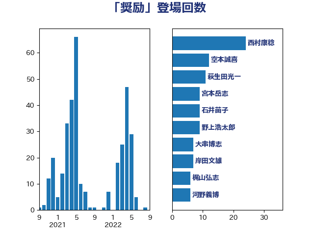

単語「奨励」

| 西村康稔 | 自由民主党 | 24 回 |
| 空本誠喜 | 日本維新の会 | 12 回 |
| 萩生田光一 | 自由民主党 | 11 回 |
| 宮本岳志 | 日本共産党 | 9 回 |
| 石井苗子 | 日本維新の会 | 9 回 |
| 野上浩太郎 | 自由民主党 | 9 回 |
| 大串博志 | 立憲民主党 | 7 回 |
| 岸田文雄 | 自由民主党 | 7 回 |
| 梶山弘志 | 自由民主党 | 6 回 |
| 河野義博 | 公明党 | 6 回 |
| 梅村聡 | 日本維新の会 | 5 回 |
| 玉木雄一郎 | 国民民主党 | 5 回 |
| 田村貴昭 | 日本共産党 | 5 回 |
| 紙智子 | 日本共産党 | 5 回 |
| 上川陽子 | 自由民主党 | 4 回 |
| 吉良よし子 | 日本共産党 | 4 回 |
| 大西健介 | 立憲民主党 | 4 回 |
| 山口俊一 | 自由民主党 | 4 回 |
| 斉藤鉄夫 | 公明党 | 4 回 |
| 末松信介 | 自由民主党 | 4 回 |
| 田村まみ | 国民民主党 | 4 回 |
| 荒井優 | 立憲民主党 | 4 回 |
| 塩川鉄也 | 日本共産党 | 3 回 |
| 宮下一郎 | 自由民主党 | 3 回 |
| 青山大人 | 立憲民主党 | 3 回 |
| 高木毅 | 自由民主党 | 3 回 |
| 三浦信祐 | 公明党 | 2 回 |
| 安江伸夫 | 公明党 | 2 回 |
| 小沼巧 | 立憲民主党 | 2 回 |
| 山田宏 | 自由民主党 | 2 回 |
| 有村治子 | 自由民主党 | 2 回 |
| 柳ヶ瀬裕文 | 日本維新の会 | 2 回 |
| 渡辺創 | 立憲民主党 | 2 回 |
| 猪口邦子 | 自由民主党 | 2 回 |
| 福島みずほ | 社会民主党 | 2 回 |
| 細野豪志 | 自由民主党 | 2 回 |
| 舩後靖彦 | れいわ新選組 | 2 回 |
| 谷田川元 | 立憲民主党 | 2 回 |
| 野間健 | 立憲民主党 | 2 回 |
| 高橋光男 | 公明党 | 2 回 |
| ながえ孝子 | 無所属 | 1 回 |
| 上田英俊 | 自由民主党 | 1 回 |
| 下条みつ | 立憲民主党 | 1 回 |
| 下野六太 | 公明党 | 1 回 |
| 伊藤孝恵 | 国民民主党 | 1 回 |
| 伊藤岳 | 日本共産党 | 1 回 |
| 加藤竜祥 | 自由民主党 | 1 回 |
| 勝部賢志 | 立憲民主党 | 1 回 |
| 北神圭朗 | 無所属 | 1 回 |
| 原口一博 | 立憲民主党 | 1 回 |
| 古川元久 | 国民民主党 | 1 回 |
| 古川禎久 | 自由民主党 | 1 回 |
| 吉田はるみ | 立憲民主党 | 1 回 |
| 堂故茂 | 自由民主党 | 1 回 |
| 塩崎彰久 | 自由民主党 | 1 回 |
| 塩田博昭 | 公明党 | 1 回 |
| 大島敦 | 立憲民主党 | 1 回 |
| 小林鷹之 | 自由民主党 | 1 回 |
| 山添拓 | 日本共産党 | 1 回 |
| 山田俊男 | 自由民主党 | 1 回 |
| 山際大志郎 | 自由民主党 | 1 回 |
| 岩渕友 | 日本共産党 | 1 回 |
| 後藤茂之 | 自由民主党 | 1 回 |
| 杉久武 | 公明党 | 1 回 |
| 杉尾秀哉 | 立憲民主党 | 1 回 |
| 杉田水脈 | 自由民主党 | 1 回 |
| 枝野幸男 | 立憲民主党 | 1 回 |
| 柚木道義 | 立憲民主党 | 1 回 |
| 横山信一 | 公明党 | 1 回 |
| 津島淳 | 自由民主党 | 1 回 |
| 浅野哲 | 国民民主党 | 1 回 |
| 渡辺猛之 | 自由民主党 | 1 回 |
| 玄葉光一郎 | 立憲民主党 | 1 回 |
| 田島麻衣子 | 立憲民主党 | 1 回 |
| 田村憲久 | 自由民主党 | 1 回 |
| 矢倉克夫 | 公明党 | 1 回 |
| 石井正弘 | 自由民主党 | 1 回 |
| 石井準一 | 自由民主党 | 1 回 |
| 石川大我 | 立憲民主党 | 1 回 |
| 美延映夫 | 日本維新の会 | 1 回 |
| 羽田次郎 | 立憲民主党 | 1 回 |
| 茂木敏充 | 自由民主党 | 1 回 |
| 菅義偉 | 自由民主党 | 1 回 |
| 落合貴之 | 立憲民主党 | 1 回 |
| 藤木眞也 | 自由民主党 | 1 回 |
| 赤羽一嘉 | 公明党 | 1 回 |
| 里見隆治 | 公明党 | 1 回 |
| 野田聖子 | 自由民主党 | 1 回 |
| 鈴木俊一 | 自由民主党 | 1 回 |
| 音喜多駿 | 日本維新の会 | 1 回 |
| 須藤元気 | 無所属 | 1 回 |
| 馬淵澄夫 | 立憲民主党 | 1 回 |
| 高見康裕 | 自由民主党 | 1 回 |
| 鳩山二郎 | 自由民主党 | 1 回 |